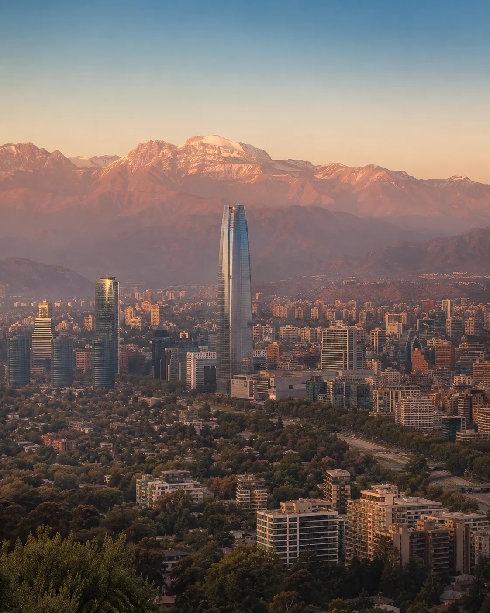
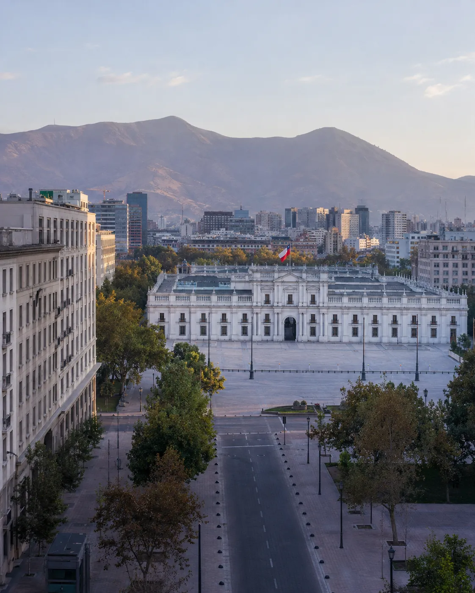
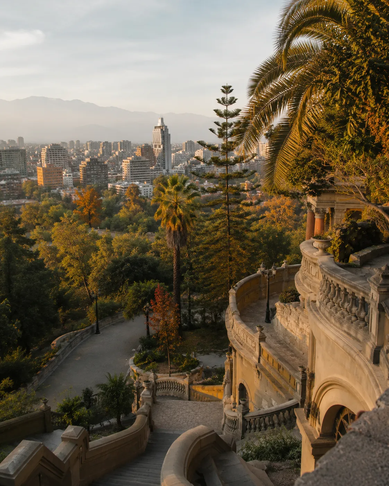
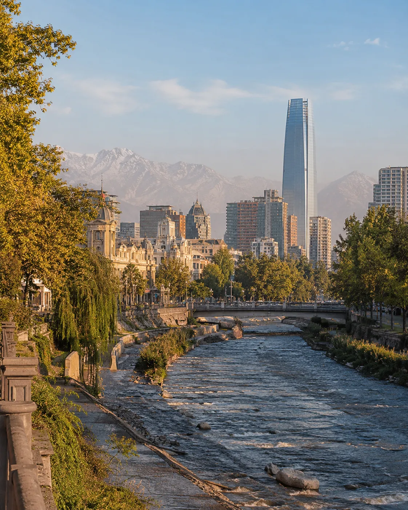
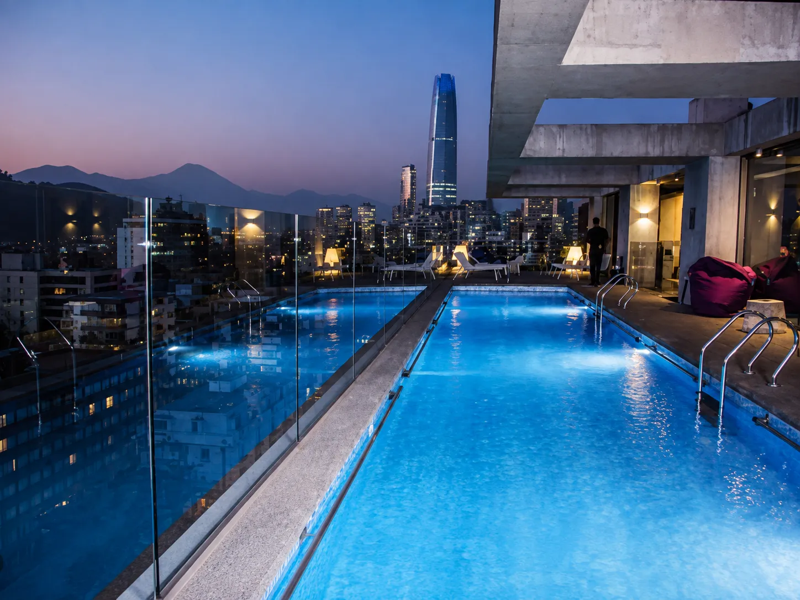
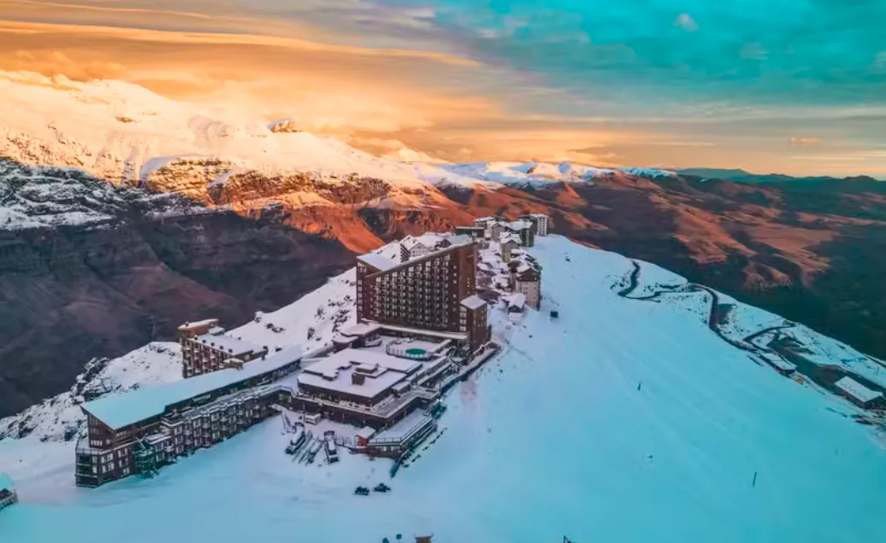
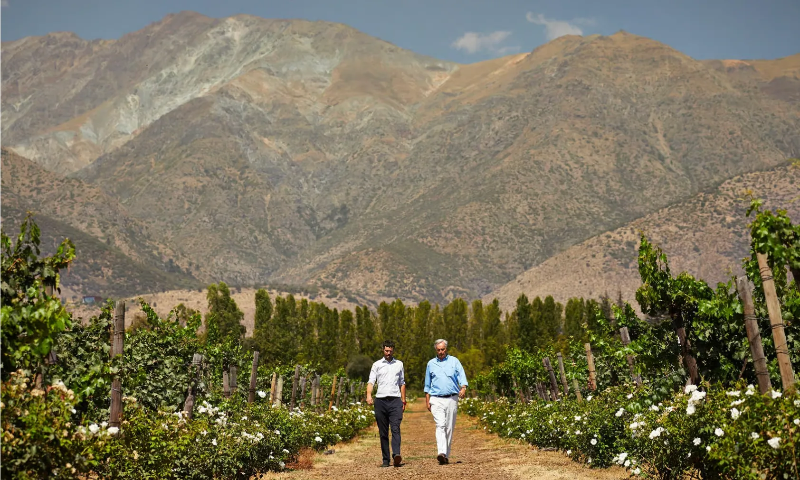
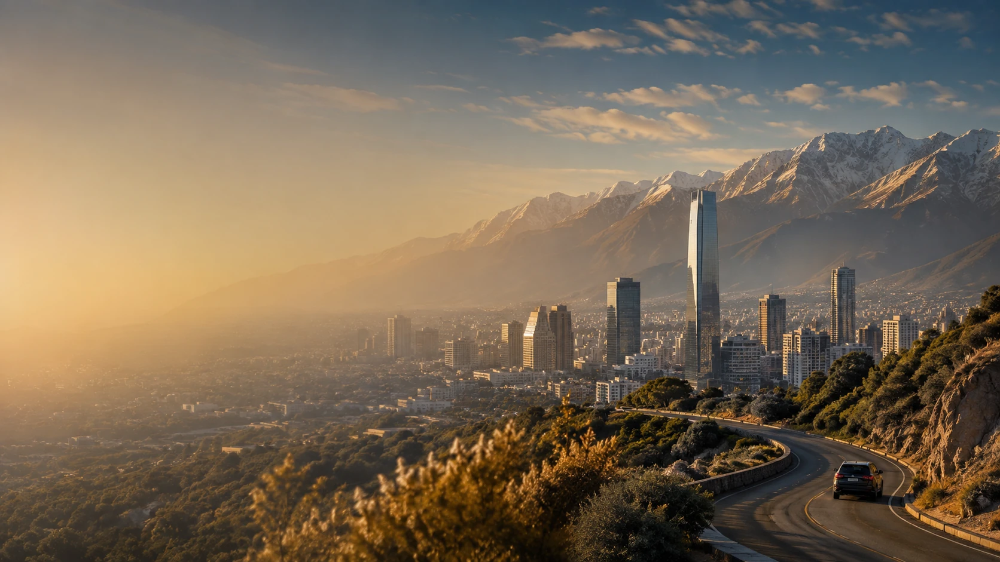

Cidade + Andes
A Cordilheira muda o enquadramento
Mesmo dentro de uma metrópole grande, a montanha continua organizando a percepção de distância, luz e escala.
Santiago funciona melhor quando você lê duas coisas ao mesmo tempo: a cidade e a Cordilheira. A base escolhida, o ritmo dos deslocamentos e a forma como você alterna bairros, mirantes e pausas urbanas mudam completamente a experiência.
Santiago ganha profundidade quando skyline, patrimônio, parques e Cordilheira aparecem na mesma narrativa.

Mesmo dentro de uma metrópole grande, a montanha continua organizando a percepção de distância, luz e escala.

A arquitetura institucional ajuda a entender uma Santiago mais histórica, formal e política, em contraste com os bairros residenciais do leste.

Parques e pontos altos quebram o ritmo urbano e ajudam a ler a cidade de cima, sem transformar o roteiro em uma corrida de atrações.

O rio, as torres e os Andes no mesmo quadro mostram como Santiago mistura geografia natural e cidade contemporânea.
Em vez de transformar a página mãe numa lista de hotéis, separamos a decisão em duas etapas: a página Onde ficar compara as seis bases; a página Hotéis recomendados mostra opções reais depois que a localização já faz sentido.
Compare Providencia, Lastarria, El Golf, Las Condes, Vitacura e Centro Histórico antes de reservar.
Comparar as seis regiões →
Veja hotéis reais em diferentes bairros e compare o perfil de cada opção antes de reservar.
Ver hotéis recomendados →Santiago entrega mais quando você organiza a viagem por ritmo: uma base eficiente, tempo para caminhar e subir a mirantes, e dias separados para as extensões que realmente interessam.
Duas noites resolvem o essencial; três costumam permitir uma leitura mais elegante, e quatro fazem sentido se Santiago tiver peso próprio no roteiro.
Centro, bairros, parques e pontos altos funcionam melhor alternados do que concentrados em blocos cansativos.
A decisão de hospedagem altera muito mais a experiência do que pequenas diferenças entre propriedades da mesma faixa.
Santiago pode ser destino principal ou porta para Andes, neve, vinhos, Atacama e outras regiões chilenas.
Neve, vinhos e Pacífico podem virar extensões fáceis da viagem. Escolha a experiência que combina com o seu tempo e veja os detalhes antes de reservar.

Neve, esqui, bate-volta e hotéis
Abrir guia de Valle Nevado →
Aquitania, Concha y Toro, Maipo e Casablanca
Abrir guia de vinícolas →
Andes, Cajón del Maipo, costa e combinações
Abrir guia de passeios →Depois de definir bairro e ritmo, aí sim faz sentido comparar as ferramentas de viagem.
Alguns links podem gerar comissão para o Lipe Travel Show sem alterar o valor pago pelo viajante.